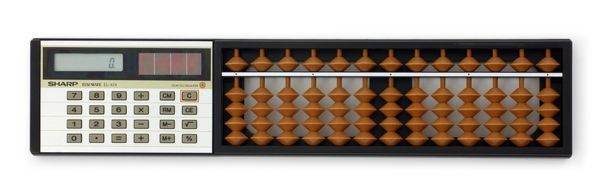
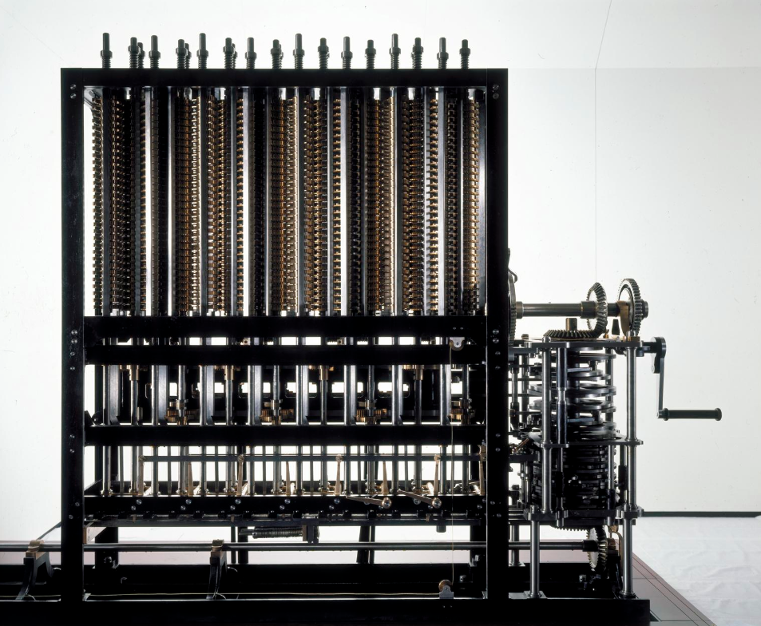
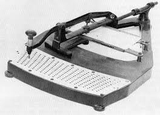
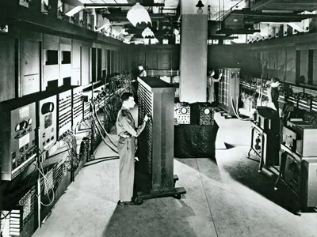
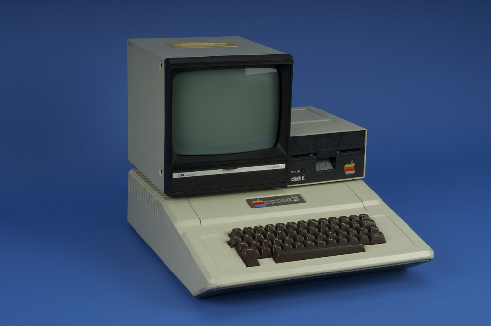

In The Beginning ...
The history of computers starts out about 2000 years ago, with the birth of the abacus. When the beads on the abacus are moved around, according to programmingrules memorized by the user, all regular arithmetic problems can be done. In 1671, Gottfried Wilhelm von Leibniz invented a computer that was built in 1694. It could add, and, after changing some things around, multiply. About a century later Thomas of Colmar created the first successful mechanical calculator that could add, subtract, multiply, and divide.

Other Memorable Events ...
- In 1812, Babbage realized that many long calculations were really a series of predictable actions that were constantly repeated. He began to design an automatic mechanical calculating machine, which he called a difference engine.
- Herman Hollerith and James Powers made a step towards automated computing with the development of punched cards. Reading errors were reduced dramatically, workflow increased, and stacks of punched cards could be used as memory of almost unlimited size. Formore than 50 years, punched card machines did most of the world's first business computing.
- The start of World War II produced a large need for computer capacity. In 1942, John P. Eckert and John W. Mauchly decided to build a high -speed electronic computer to do the job. Known as ENIAC, this machine could multiply two numbers at a rate of 300 per second.
- Early in the 50's two important engineering discoveries changed the image of the computer field -Magnetic Core Memoryand Transistor -Circuit Elements. These technical discoveries quickly found their way into computers. Such computers were mostly found in large computer centers operated by industry, government, and private laboratories.

- In the 1960's, efforts to design and develop the fastest possible computer with the greatest capacity reached a turning point with the Stretch computer by IBM. Stretch was made with the fastest access time, and total capacity in the vicinity of 100,000,000 words.
- Many companies, some new to the computer field, introduced programmable minicomputerssupplied with software packages in the 1970’s. The "shrinking" trend continued with the introduction of personal computers (PC's), which are programmable machines small enough and inexpensive enough to be purchased and used by individuals. Many companies, such as Apple Computer and Radio Shack introduced very successful PCs in the 1970’s.
- By the late 1980’s, some personal computers were run by microprocessors that, handling 32 bits of data at a time, could process about 4,000,000 instructions per second.
- Computer networking, e-mail and the Internet, and electronic publishing are just a few of the applications that have grown in recent years. Computers continue to decrease in price, offering the promise that soon, “computers will reside in most homes, offices, and schools”.
Great Computer Quotes ...
“Men are form Mars, Women are from Venus, Computers are from Hell."
~Author Unknown
“Give a person a fish and you feed them for a day;
teach that person to use the Internet and they won't bother you for weeks.”
~Author Unknown
"To err is human, but to really foul things up requires a computer."
~Farmer's Almanac, 1972
Computers accesibility and progress ...
- Unaccessable and only usable by geniuses (1950s)
- Programmable by highly trained people (1960s - 1970s)
- Useable by almost anyone willing to learn (1980s to current day)
References ...
Reference for Computer accesibility and progress and for the following images: Early calculator, Fishing for info, Computer zombie, Difference machine, Punch card machine, ENIAC machine, and Apple computer (1960s). As well as the sites used to reseach the additional element sliderrevolution and developer.mozilla.org.
Added Features ...
Included in this webpage are two added features.
- Block
- Border Animation
- Scroll Block
The animated rainbow border block was added by having an additional div where background color, borders, border colors and animation were added. to the css page. The animation used is an @keyframes and is called steam, it gives the whipsy effect and the blur enhances it. This took a few tried figure out and the error I had been making the whole time was using '' in the content section instead of "". I then added the div section around my main header, resized it, and moved my main div down to give more of a divide. Lastly, I also added a scroll bar to this section using a .scroll and defining overflow to scroll and setting perameters.